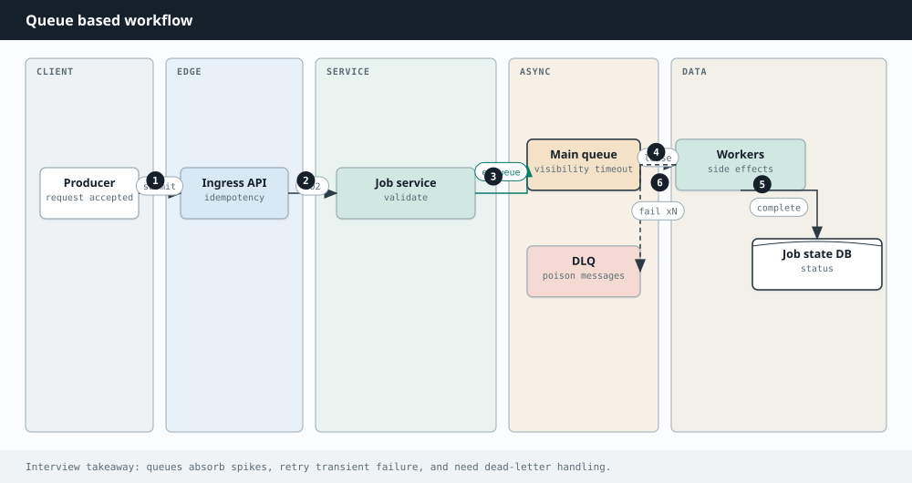

System Design
Chapter 26
Queues and async

processing
Not everything has to happen while the user waits. Sending an email, resizing an image, updating a feed, these can happen in the background. A message queue is the piece that lets one part of the system hand off work to another without waiting, which makes systems more resilient and much easier to scale.
Producer Consumer Queue / Topic holds messages Producer Consumer buffer absorbs spikes A queue decouples producers from consumers, so each side works at its own pace.
Why go asynchronous
A queue sits between a producer that creates work and a consumer that does it. The producer drops a message and moves on immediately, so the user is not stuck waiting. If a traffic spike arrives, the queue buffers the flood and the consumers drain it at a steady pace, so nothing falls over. If a consumer crashes, the message waits safely until another consumer picks it up.
Queues versus publish and subscribe
A plain queue is point to point: each message is handled by exactly one consumer, which is perfect for a pool of workers sharing a task list. Publish and subscribe broadcasts each message on a topic to every interested subscriber, which is perfect when one event needs to trigger many independent reactions. Log based systems like Kafka blur the line by keeping an ordered, replayable log that many consumer groups can read at their own position.
PROS CONS The user gets a fast response while More moving parts and a new system to work happens later operate Spikes are absorbed instead of crashing Results are eventual, not immediate, the system which can confuse users Producers and consumers scale and fail Exactly once delivery is very hard, so independently you design for duplicates Failed work can be retried automatically Debugging a flow spread across queues is harder
A T L E A S T O N C E P L U S I D E M P O T E N C Y
Guaranteeing a message is delivered exactly once is famously hard. The practical pattern is at least once delivery, which may deliver a message twice, combined with idempotent consumers that produce the same result no matter how many times they process the same message. A dead letter queue catches messages that keep failing so they do not block everything else.
Going Deeper
Partitions, ordering, and messages that will not process
A log based system like Kafka splits a topic into partitions, and order is only guaranteed within a partition, so you choose a partition key such as user id to keep related messages in order.
Consumers form a group and divide the partitions between them, so adding consumers raises throughput. Because delivery is usually at least once, a message can arrive twice, so consumers must be idempotent, producing the same result no matter how many times they see it. A message that keeps failing is moved to a dead letter queue after a few retries, so one poison message does not block everything behind it.
A topic is split into ordered partitions. Consumers share them, and messages Guaranteeing exactly once delivery is famously hard, so the practical recipe is at least once delivery combined with idempotent consumers. Give each message a stable id and have the consumer ignore ids it has already processed. That way a duplicate is harmless, and you get effectively once behavior without the cost of true exactly once machinery.
Interview drill
Queues show up inside almost every other design — master the vocabulary.
More drills in the Interview Lab.
Q1. Design a notification system
Push/email/SMS with preferences and retries.
Kafka by priority/channel; template workers; provider adapters; DLQ. Lab Q7.
Q2. At-least-once vs exactly-once
What can you actually promise?
Most systems: at-least-once + idempotent consumers. Exactly-once needs transactional outbox / dedupe store — costly; use when money moves.
Q3. Poison messages
A message crashes consumers forever.
Max receive count → dead-letter queue; alert; replay after fix; never block the partition on one bad payload.
Q4. Ordering guarantees
When is order preserved?
Per partition key only. Choose key = entity_id (user/order). Global order does not scale — do not promise it.
Q5. Async vs sync boundaries
What must be synchronous in checkout?
Payment authorization and inventory commit usually sync; email, recommendations, search indexing async.